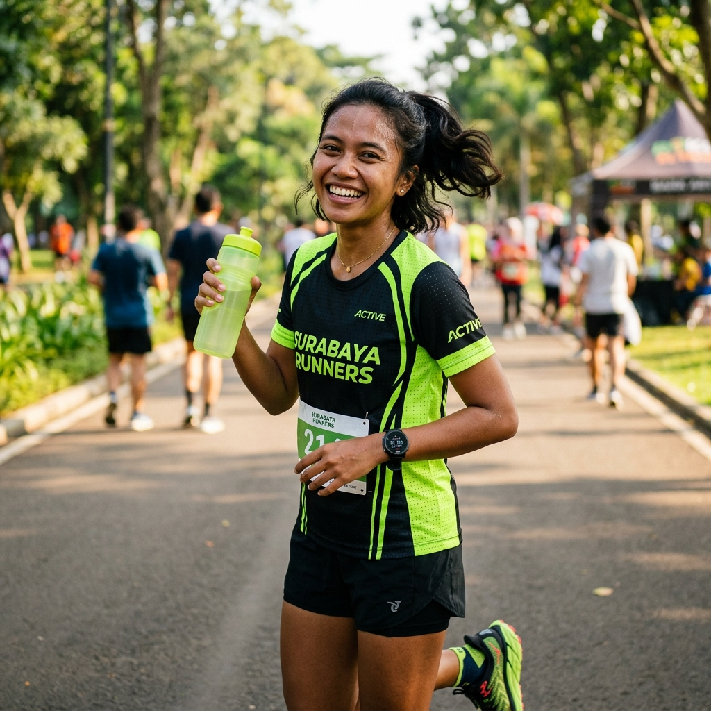
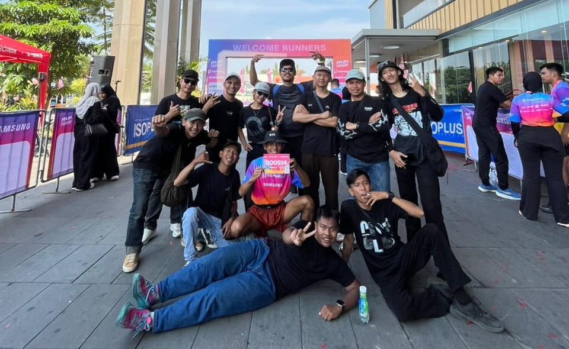
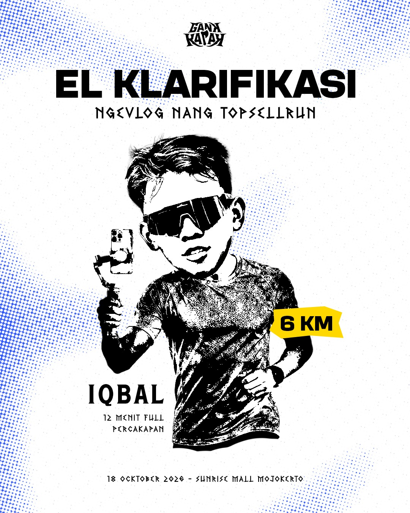
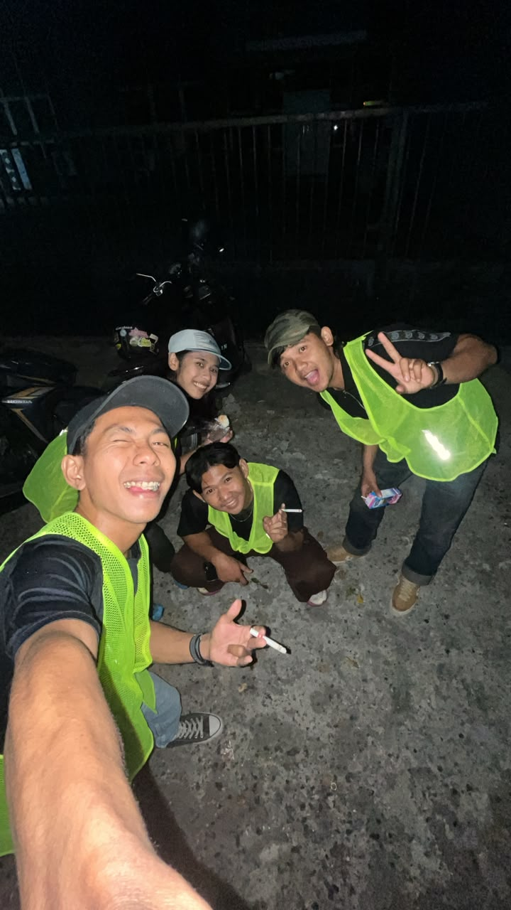
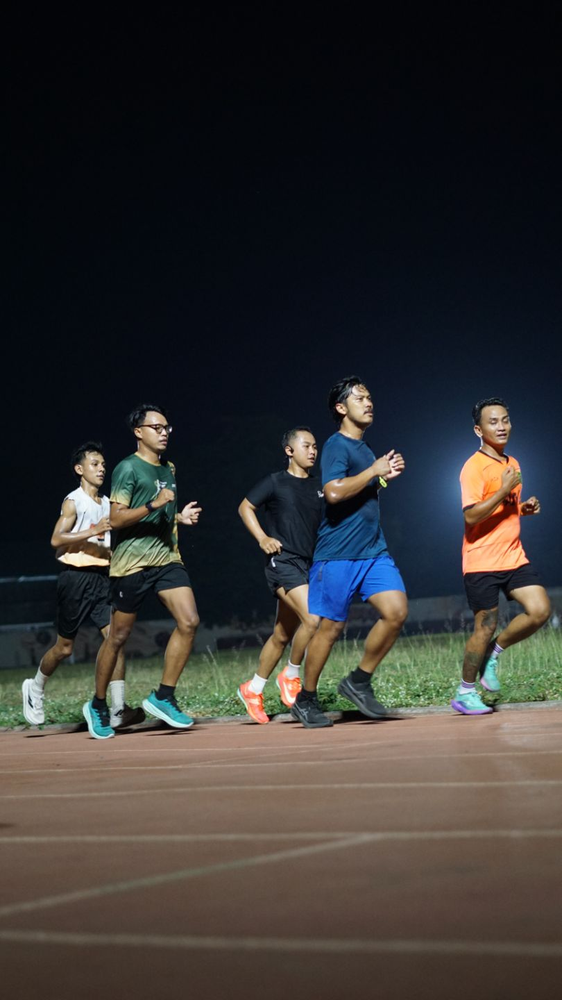
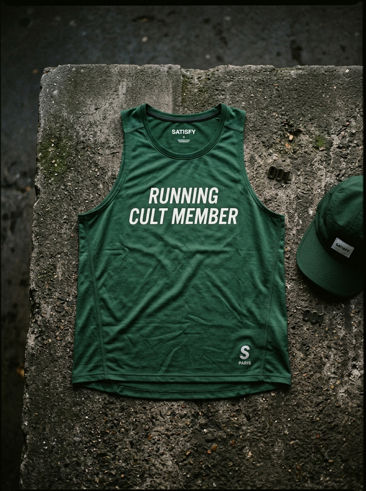
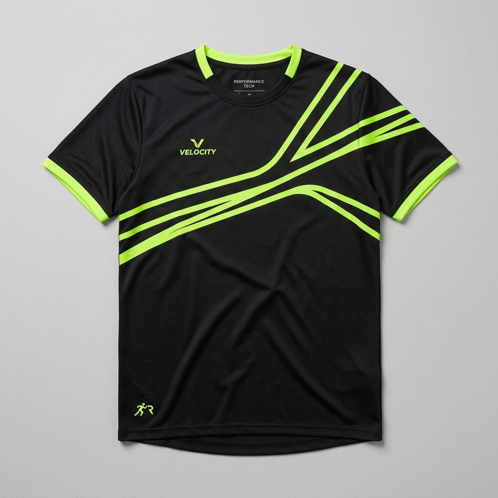

Runner of the Month

01

gank kapak : arek arek dewe ...



"Kang PARKIR"
"jadi marshal"

"biar apa ? biar kentchang"
"FIRST KONTINGEN GENK KAPAK"

"UNO RUN AWAL DARI SEMUA"

ARSIP / SOLD OUTArtikel kaos lari perdana Gank Kapak telah habis terjual dan tidak dicetak ulang. Pantau Instagram untuk info rilisan artikel berikutnya.
Catatan Anisa menempuh 50 kilometer sementara anggota lain masih berdebat soal menu sarapan bubur.
Tiar dan Faisal berbagi tugas menyisir barisan belakang agar tidak ada yang tertinggal di Pendopo Paijo.
Taktik taktis Evan: lari di barisan paling belakang, finis tepat waktu, lalu lenyap tanpa jejak foto bersama.
Grup WhatsApp saat ini bersifat khusus dan terbatas untuk anggota internal. Untuk kenalan, tanya rute, atau ikut sesi lari dadakan, sapa kami langsung melalui DM Instagram.
Saat ini belum ada sponsor komersial. Semua dukungan murni dari patungan gorengan dan kopi basecamp. Tertarik jadi sponsor resmi pertama?
Jadi partner kami